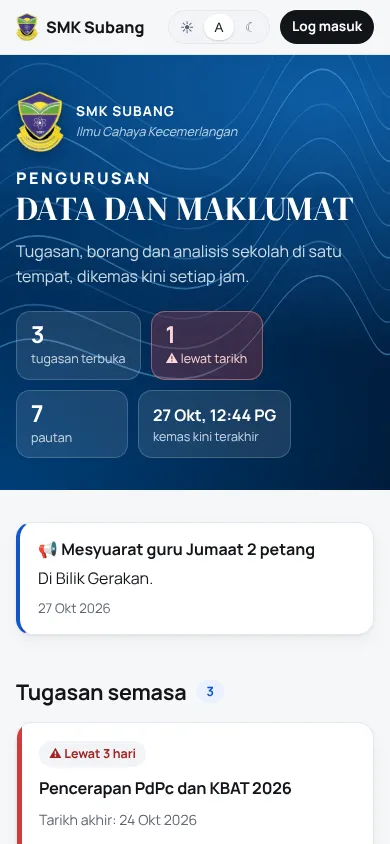

SMK Subang data dashboard
One data hub for a Selangor secondary school, replacing a page of links and a messy spreadsheet.
- ~150 teachers use it, mostly on phones
- Who hasn't submitted, ready to paste into WhatsApp
- Private by design: totals in public, names behind login
Next.js · Express · Supabase · Apps Script